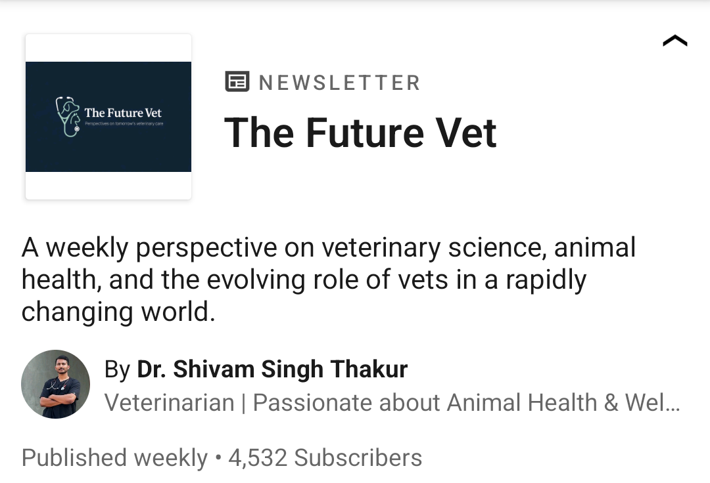

Editorial & Visual Presence
Media Highlights
A curated media stream featuring editorials, visual credentials, and published assets developed by the ThatVetGuy Collective.
Selected Features
Published and Shareable Assets

Newspaper Editorial
World Rabies Day Feature
Public health editorial work translating veterinary interventions for a broad readership.

Newsletter Media
The Animal Origin Foods Journal
Industry newsletter visuals used to support science-backed veterinary communication.

Professional Media
The Future Vet
Editorial storytelling format built for veterinary professionals and partner brands.